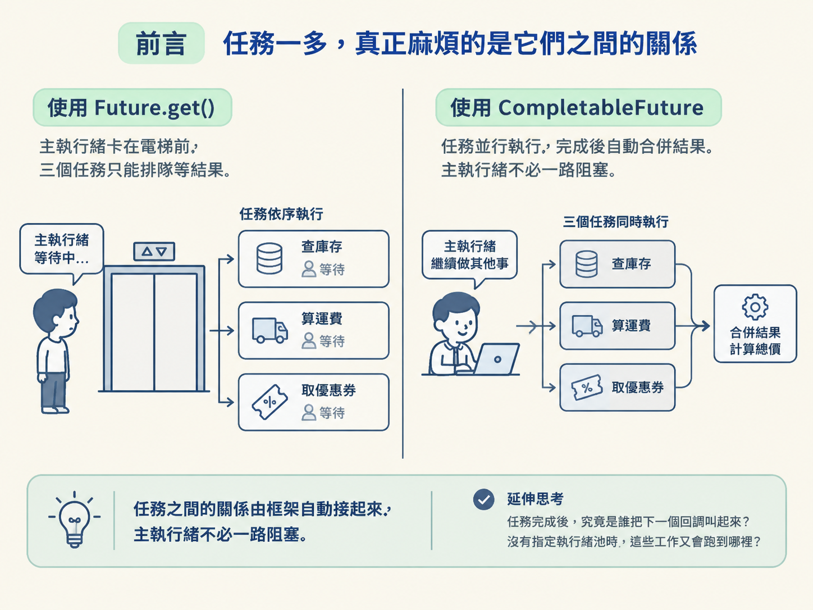
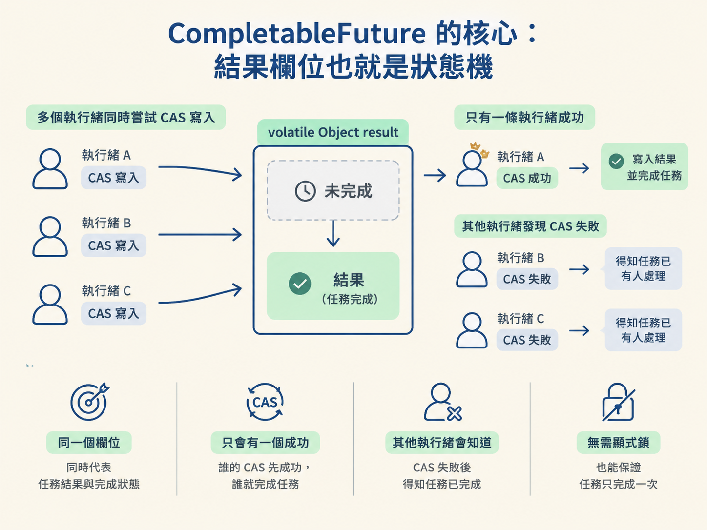
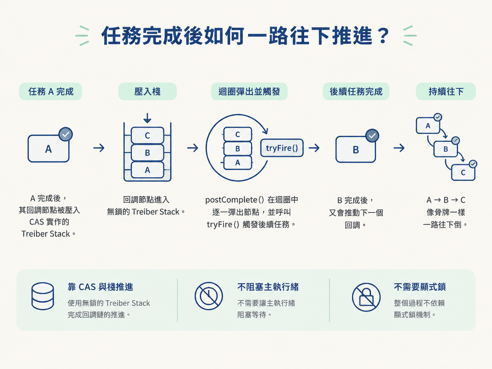
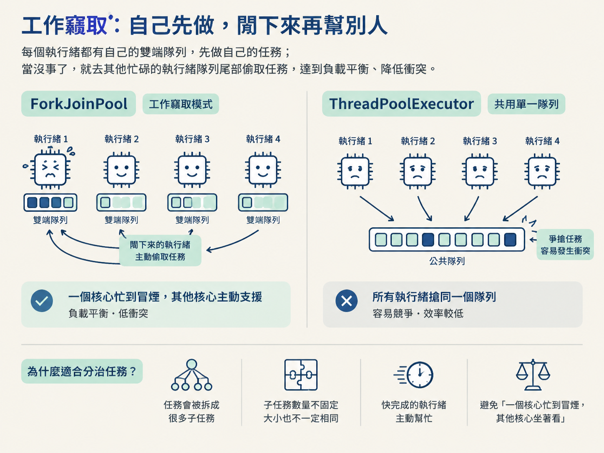

想像一個下單介面：它要同時查庫存、計算運費，還要取得優惠券。這三件事彼此沒有依賴，理想情況是並行處理；但三件事都完成後，才能合併結果並算出總價。
如果只用 Future，你通常會呼叫 Future.get() 取得結果。問題是，get() 會阻塞目前的執行緒。執行緒一旦在這裡等待，就像櫃檯人員站在電梯前乾等，沒辦法繼續處理其他工作。要是你想在某個任務完成時立刻接著做下一件事，還得自己開執行緒或輪詢狀態，任務之間的依賴很快就會變得難以維護。
CompletableFuture 解決的正是這種非同步編排問題：任務 A 完成後接著做 B，幾個任務都完成後再合併結果，而且不必讓主執行緒一路卡著等待。這一節不只看 thenApply、thenCompose 怎麼串接，也會往底層追蹤：任務完成後，究竟是誰把下一個回調叫起來？沒有指定執行緒池時，這些工作又會跑到哪裡？

CompletableFuture 的內部結構比想像中精簡。它有一個關鍵成員變數：volatile Object result。這個欄位一人分飾兩角，同時代表「任務的結果」以及「任務目前是否完成」。
當 result 還是 null，或處於某個中間狀態時，表示任務尚未完成。等它被設定成正常結果，或被設定成例外物件，就代表任務已經結束。因此，判斷任務是否完成，本質上就是觀察這個欄位是否已經被填入。
但多個執行緒可能同時嘗試完成同一個任務。這時不能只靠普通的寫入，否則可能出現「兩個執行緒都以為自己完成了任務」的問題。CompletableFuture 使用 CAS（Compare-And-Swap）處理這件事。
CAS 可以想成一個帶條件的替換動作：先確認這個欄位仍然是自己預期的舊值，只有確認成功，才把它換成新值。如果別的執行緒已經先換過，CAS 就會失敗。
所以，complete() 的核心就是嘗試用 CAS，把 result 從「尚未完成」更新成真正的結果。誰的 CAS 成功，誰就完成了任務；其他執行緒發現 CAS 失敗，就知道任務已經有人處理完了。這樣便能保證任務只完成一次，不必另外加上一把顯式鎖。

當你寫下 cf.thenApply(f) 時，主執行緒不需要停下來等待前一個任務。CompletableFuture 會把後續操作包裝成一個 Completion 物件。這個物件可以看成「前一個任務完成後要執行的待辦事項」。
接著，系統會判斷前面的任務目前完成了沒有：
Completion 節點壓入 CompletableFuture 內部維護的無鎖棧（Treiber Stack），先掛在那裡等待。Treiber Stack 是一種以 CAS 實作的並發棧。它的壓棧與彈棧都集中在棧頂，不需要用鎖保護。可以把它想成任務 A 桌上的一疊便利貼：你先把「A 完成後要做 B」這張便利貼壓上去；A 還沒完成時，便利貼就留在桌上。A 一完成，就把便利貼撕下來照著做。
這個機制可以濃縮成一句話：任務 A 完成時，就執行掛在自己身上的 B；如果 A 尚未完成，就先把 B 放進 A 的待辦棧裡。因此，回調不是靠某個執行緒一直輪詢，而是被掛在前序任務上，等完成事件發生時再被觸發。
當前序任務呼叫 complete 或 completeExceptionally，並且 CAS 成功更新 result 後，CompletableFuture 會進入一個關鍵流程：postComplete()。
postComplete() 的工作就像處理待辦清單。它會在迴圈中從棧裡逐一彈出 Completion 節點，接著呼叫每個節點的 tryFire()，讓後續任務真正開始執行。
如果後續任務完成後，自己的棧上還掛著更後面的回調，它又會再次觸發 postComplete()。於是，任務 A 完成後推動 B，B 完成後再推動 C，整條回調鏈就像骨牌一樣一路往下倒。這個過程主要靠 CAS 與棧推進，不需要讓主執行緒阻塞等待，也不需要使用顯式鎖。

你可能寫過這樣的程式：
CompletableFuture.supplyAsync(() -> ...)
即使沒有傳入執行緒池，任務仍然可以非同步執行。原因是：沒有指定執行緒池時，CompletableFuture 預設使用 ForkJoinPool.commonPool()。
這個 commonPool 是 JVM 中全域共用的池。換句話說，你的任務不是獨占一組執行緒，而是和其他使用者共用同一個工作區。若你把阻塞式 I/O 放進去，例如長時間等待網路或檔案操作，就可能占住池中的工作執行緒，進而拖慢其他也使用 commonPool 的任務。
因此，正式環境通常會根據工作類型自行建立並傳入適合的執行緒池。這不是語法上的偏好，而是避免不同任務互相拖累的邊界。
既然 CompletableFuture 常會使用 ForkJoinPool，就要理解它和一般執行緒池的差異。ForkJoinPool 是 JDK 7 引入的特殊執行緒池，主要服務分治演算法與遞迴任務。
它的想法很像把一個大包裹拆成許多小包裹：先把大任務持續拆小，讓多條執行緒平行處理，最後再把結果合併回來。大數據計算、排序，以及 Java 8 的 ParallelStream，都屬於典型場景。
它和 ThreadPoolExecutor 的本質差異，可以先從隊列結構與調度策略看起。
| 比較點 | ThreadPoolExecutor | ForkJoinPool |
|---|---|---|
| 任務隊列 | 一個公共的阻塞隊列 | 每條工作執行緒各自一個雙端隊列 |
| 調度方式 | 爭搶模式，大家搶同一個隊列 | 工作竊取模式 |
| 併發代價 | 高併發時鎖競爭嚴重 | 取與偷在隊列兩端，衝突很小 |
| 適用場景 | 互相獨立、較短、偏 IO 密集的任務 | 可遞迴拆解、偏 CPU 密集的大計算 |
ThreadPoolExecutor 像是一個大家共用的取件櫃。所有執行緒都到同一個公共隊列拿任務，執行緒一多，就可能在同一個入口互相爭搶。
ForkJoinPool 則讓每條工作執行緒先管理自己的雙端隊列。任務分散存放，大家不必一開始就擠在同一個隊列上，因而能減少共享資料結構造成的衝突。
ForkJoinPool 最具代表性的設計是工作竊取。它遵循兩個規則：
這裡的關鍵是「自己從頭取，偷別人的尾」。兩個執行緒操作的是同一個雙端隊列的不同端，因此碰撞機會很小，不必頻繁爭搶同一個位置。
這種安排特別適合分治任務。因為任務會被拆成數量不固定、大小不一定相同的子任務，事先平均分配很難做到剛剛好。若某條執行緒很快做完自己的工作，它可以主動去幫忙處理其他執行緒留下的任務，避免出現「一個核心忙到冒煙，其他核心坐著看」的情況。

相較之下，ThreadPoolExecutor 的公共隊列爭搶模式，更適合彼此獨立、執行時間較短，或偏向 I/O 的任務。ForkJoinPool 則更適合可以遞迴拆分、主要消耗 CPU 的計算工作。兩者不是誰全面取代誰，而是隊列與調度方式對應不同的任務形狀。
CompletableFuture 用一個volatile result同時裝結果與狀態，靠 CAS 決定誰完成；thenApply之類的回調被封裝成 Completion 節點，壓進 CAS 實作的 Treiber Stack，前序完成後由postComplete()迴圈彈出並觸發tryFire()，形成無鎖的連鎖。它沒指定池時預設用ForkJoinPool.commonPool()，阻塞操作會拖累共用的池。ForkJoinPool 的關鍵在每執行緒一個雙端隊列加工作竊取，自己從頭取、空閒去尾部偷，衝突小、適合可分治的 CPU 密集任務；ThreadPoolExecutor 則是單一公共隊列爭搶，適合獨立短任務。
把這些結構放在一起看，CompletableFuture 負責的是「任務之間如何接起來」，ForkJoinPool 負責的是「這些任務如何被工作執行緒取得與分配」。前者像一條會自動推進的接力鏈，後者像一群能互相支援的工人。下一節會把等待與喚醒真正寫成程式：生產者消費者、三執行緒交替打印，以及 N 執行緒順序打印。看似不同的題目，背後其實都在處理同一組併發骨架。